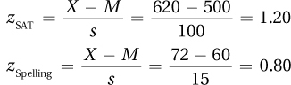
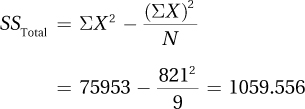
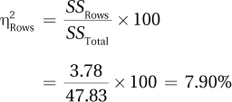
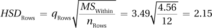
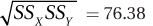
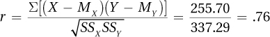
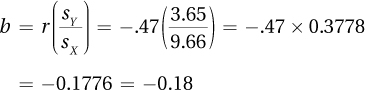

Appendix B
APPENDIX B
Solutions to Odd-Numbered End-of-Chapter Exercises
Chapter 1
B-1
1.01summarize
1.03cases
1.05(a) X causes Y; (b) Y causes X; (c) some other variable (Z or a confounding variable) causes both X and Y.
1.07random assignment
1.09dependent variable (or outcome variable)
1.11groups
1.13independent = cause; effect = dependent
1.15grouping
1.17NOIR
1.19ordinal
1.21arbitrary; absolute
1.23population
1.25statistic; parameter
1.27descriptive; inferential
1.29two
1.31
Do metal and plastic handcuffs differ in how much abrasion they cause?
Type of handcuff is the explanatory variable; amount of abrasion is the outcome variable.
Experimental
N/A
1.33
Are “conscientious” students smarter than “nonconscientious” students?
Type of student (conscientious vs. nonconscientious) is the explanatory variable; IQ is the outcome variable.
Quasi-experimental
Socioeconomic status may be a confounding variable. Richer students may be able to afford to be conscientious (to buy all the books, not to have to work so they have more time for studying) and richer students may have gone to better schools, received a better education, and ended up with a higher IQ.
1.35
Are a country’s wealth and its greenhouse gas production related?
GDP is the explanatory variable; tons of CO2 produced is the outcome variable.
Correlational
Population could be a confounding variable. Over the last 50 years, as there were more people in the country, there would be more people to produce and consume goods, increasing both GDP and greenhouse gases.
1.37
Does type of information received affect voting behavior?
Type of information (none vs. positive vs. negative) is the explanatory variable; voting for or against is the outcome variable.
Experimental
N/A
1.39Nominal
1.41Ordinal
1.43Interval
1.45Ordinal
1.47Nominal
1.49
Sample
Parameters
Inferential
1.51Parameter
1.53N = 6
1.55ΣX2 = 82 + 92 + 52 + 42 + 72 + 82 = 299.00
1.57ΣX = 13 + 18 + 11 = 42.00
1.59
1.6112.68
1.63121.01
1.6522.47
1.672.53
1.69c
1.71
Do higher levels of physical distress in cities lead to higher levels of social distress?
Amount of graffiti (high, moderate, or low) is the explanatory variable, and teenage pregnancy rate is the outcome variable.
quasi-experimental
The proportion of the city population that has a high school degree could be a confounding variable. Less-educated teenage girls may be more likely to get pregnant. City residents who have not completed high school may be less likely to be employed and more likely to deface property.
B-2
Chapter 2
2.01count
2.03values; frequencies
2.05fc
2.07nominal
2.09grouped
2.11details
2.13midpoint
2.15how many
2.17nominal; ordinal
2.19in-between (fractional)
2.21interval; ratio
2.23range
2.25the interval width
2.27bar graph
2.29wider; tall
2.31Y
2.33touch
2.35nominal
2.37modality; skewness; kurtosis
2.39bimodal
2.41negative
2.43ungrouped
2.45Don’t forget a title!
Frequency Distribution for Number of Psychiatric Diagnoses in 45 Residents of a Psychiatric Hospital
| Number of Diagnoses | Frequency | Cumulative Frequency | Percentage | Cumulative Percentage |
| 5 | 1 | 45 | 2.22 | 100.00 |
| 4 | 2 | 44 | 4.44 | 97.78 |
| 3 | 9 | 42 | 20.00 | 93.33 |
| 2 | 19 | 33 | 42.22 | 73.33 |
| 1 | 12 | 14 | 26.67 | 31.11 |
| 0 | 2 | 2 | 4.44 | 4.44 |
2.47
Grouped Frequency Distribution for Number of Chairs in 41 College Classrooms (Interval Width = 20)
| Number of Chairs | Interval Midpoint | Frequency | Cumulative Frequency | Percentage | Cumulative Percentage |
| 90–109 | 99.50 | 1 | 41 | 2.44 | 100.00 |
| 70–89 | 79.50 | 1 | 40 | 2.44 | 97.56 |
| 50–69 | 59.50 | 11 | 39 | 26.83 | 95.12 |
| 30–49 | 39.50 | 17 | 28 | 41.46 | 68.29 |
| 10–29 | 19.50 | 11 | 11 | 26.83 | 26.83 |
2.49
Discrete
Continuous
Discrete
Discrete
Continuous
2.51
| Real Lower Limit | Real Upper Limit | Interval Width | Midpoint | |
| a. | 30.50 | 34.50 | 4.00 | 32.50 |
| b. | 25.00 | 45.00 | 20.00 | 35.00 |
| c. | 2.495 | 2.995 | .500 | 2.745 |
| d. | 10.50 | 11.50 | 1.00 | 11.00 |
2.53
Since the data are nominal, the order is arbitrary and discussing the shape of the distribution does not make sense.
B-3
2.55 Either a histogram or frequency polygon can be made for these data.
The distribution is unimodal, doesn’t seem too peaked or too flat, and is not skewed.
2.57
The distribution is unimodal, doesn’t seem too peaked or too flat, and is positively skewed.
2.59b
2.61e
2.63Shortest time: 4 minutes: Leave at 10:16:59, return at 10:21:00. 241 seconds, or 4 minutes and one second.
Longest time: 6 minutes: Leave at 10:16:00, return at 10:21:59. 359 seconds, or 5 minutes and 59 seconds.
Chapter 3
3.01central tendency; variability
3.03variability
3.050
3.07less
3.09mean
3.11mode
3.13interval; ratio
3.15is
3.17more
3.19population; sample
3.21variance
3.23cases
3.25tightly
3.27square
3.29σ
3.31corrected; population
3.33deviation score
3.35The data are ratio-level, but there is an outlier, so the median is the most appropriate measure of central tendency. Mdn = 4.00.
3.37They are ratio-level data, and there isn’t anything unusual in terms of skewness or modality, so the mean is the most appropriate measure of central tendency.
3.39
3.41N = 47, so median is the score associated with case number . Case number has a value of 102, so Mdn = 102.00. The value of 102 is also the most commonly occurring score, so mode = 102.00.
3.43(a) Range = 201 – 37 = $164 million. (b) The interquartile range is a better measure of variability to report because it trims off the extreme scores. And the value of $201 million seems to be an outlier, more than $50 million higher than the next value.
3.45
N = 5
Σ (X – M) = (47 – 50.00) + (53 – 50.00) + (67 – 50.00) + (45 – 50.00) + (38 –50.00) = 0.00
Σ (X – M)2 = (47 – 50.00)2 + (53 – 50.00)2 + (67 – 50.00)2 + (45 – 50.00)2 + (38 50.00)2 = 476.00
B-4
3.47
3.49
3.51
3.53
3.55d
3.57b
3.59(a) The larger sample, N = 100, will have a smaller correction for s 2 to approximate the population variance. (b) As sample size gets larger, the sample probably captures more of the variability that exists in the population, so the formula “corrects” the standard deviation less.
Chapter 4
4.01raw
4.03mean; standard deviation
4.05zero
4.07mean; standard deviation
4.09mean; median
4.11decreases
4.13rare
4.15random
4.170.01
4.19the same
4.21less than
4.23at or below
4.25probability
4.27the total number of possible outcomes
4.29fraction; proportion; percentage
4.311.00; .00 (or, 100%; 0%)
4.33.05; likely
4.353
4.37
4.39X = M + (z × s) = 12.75 + (1.45 × 3.33) = 17.58
4.41
4.43X = M + (z × s) = 100 + (0 × 15) = 100.00
(One could also complete this problem without doing any math as a z score of zero is right at the mean, and the mean for IQ scores is 100.)
4.45
Hillary did better on the math subtest of the SAT than she did on the spelling test.
4.479.01%
4.4980.23%
4.5147.50%
4.53
11.90% of cases in a normal distribution have a z score ≥1.18. Thus, 11.90% of Americans should have high diastolic blood pressure (90 or higher).
4.55PR = 1.70
4.57
PR = 80.78
PR = 42.07
4.59PR of 88.5 = z score of 1.20
SAT = X = M + (z × s) = 500 + (1.20 × 100) = 620.00
4.61
4.63This is 5% on each side of the midpoint. Use column B: ±0.13
4.65First find z scores for middle 84% (42% on each side of the midpoint). Use column B: ±1.41. Then calculate IQ scores: 100 + (–1.41 × 15) = 78.85 and 100 + (1.41 × 15) = 121.15. The middle 84% of IQ scores fall from an IQ score of 78.85 to 121.15. (That could also be written as 100 ± 21.15.)
B-5
4.67That’s 2% in each tail. Use column C: ±2.05
4.69That’s 7.5% in each tail. Using column C, z scores = ±1.44. Then calculate SAT subtest scores: SAT = 500 + (–1.44 × 100) = 356.00 and SAT = 500 + (1.44 × 100) = 644.00. The SAT scores are 356.00 and 644.00.
4.710.135%, using column C
4.73Using column B, 14.80% of scores fall from the mean to a z score of 0.38, so 2 × 14.80 = 29.60% of scores fall within 0.38 standard deviations of the mean.
4.75Using column B, 19.15% of scores fall from the mean to a z score of 0.5, so 2 × 48.21 = 38.30% of scores fall within a half standard deviations of the mean. Thus, p(Not with a half standard deviation) = 1 – .3830 = .6170, or 61.7%.
4.77That’s 5% in each tail. Using column C, the z score should be 1.645.
4.79That’s 5% in the upper tail. Using column C, the z score should be 1.645.
4.811.00
4.83c
4.85z = –5.00. (z scores are deviation scores and the sum of a set of deviation scores is always zero. The first four cases sum to 5, so the one missing case must have a value of –5 in order to bring the sum of all five z scores to zero.)
4.87There are more genius dogs than genius cats. Cats, with a smaller standard deviation, have scores that cluster closer to the mean. Thus, they have fewer scores that fall far away from the mean, which means fewer cats will score in the genius range. (This also means that there are more stupid dogs than stupid cats.)
4.89Since the normal distribution is symmetric, the mean is . Assuming a very, very rare event has a z score of 3, the standard deviation is .
Chapter 5
5.01population; subset
5.03attributes; proportion
5.05convenience
5.07random number table (“computer” is also an acceptable answer)
5.09population
5.11differ
5.1370
5.15random
5.17small; large
5.19standard error of the mean
5.2130
5.23mean
5.25s
5.27range; sample; population
5.291.96
5.31M = 10.5, 95%CI [7.32,13.68]
5.3307, 18, 32, 20, 39, 02, 31, 45, 14, and 24
5.35Consent rate is less than 70%, so the director should not pay attention to the results (or should at least be skeptical).
5.37
5.39
5.4195%CIμ = M ± (1.96 × σM)
= 17.00 ± (1.96 × 4)
= 17.00 ± 7.84
M = 1.700, 95%CI [9.16,24.84]
5.43
5.45c
5.47As the population standard deviation increases, so does the standard error of the mean as long as the sample size is held constant.
B-6
5.49
5.51Increase the sample size, which would reduce the standard error of the mean.
Chapter 6
6.01explanation; facts
6.03hypothesis
6.05H0; H1
6.07specific; negative
6.09alternative
6.11disprove
6.13true
6.15sampling error
6.17(1) Pick a test, (2) check the assumptions, (3) state the hypotheses, (4) set the decision rule, (5) calculate the value of the test statistic, (6) interpret the results.
6.19assumptions
6.21nondirectional
6.23one; two
6.25critical value
6.27interpretation
6.29population
6.31influence
6.33population mean
6.35zero
6.37rare zone (or extreme sections)
6.39rare
6.41–1.96; + 1.96
6.43z; + 1.96
6.45α
6.47sample mean; population mean
6.49has rejected
6.51statistically different
6.53p < .05
6.55does not
6.57be rejected
6.59can’t
6.615%
6.63larger; easier
6.65low; reject
6.675% (or .05)
6.69Type II; Type I
6.71it should be rejected
6.73Type I; Type II
6.75a single-sample z test
6.77The random sample assumption is not violated. The independence assumption is not violated. School readiness is a psychological variable and probably is normally distributed. Since no assumptions are violated, it is OK to proceed with the single-sample z test.
6.79H0: μ = 60
H1: μ ≠ 60
6.81If z ≤ –1.96 or if z ≥ 1.96, reject H0.
If –1.96 < z < 1.96, fail to reject H0.
6.83
6.85
6.87
6.89
2.37≥ 1.96, so H0 rejected;
z (N =23) = 2.37, p < .05
6.91(a) There was a statistically significant difference; (b) the sample mean is higher than the population mean.
6.93A researcher compared the mean weight of American women who want to lose weight (178 pounds) to the average weight of American women (164 pounds). The difference was statistically significant, z (N = 123) = 3.68, p < .05. Women in America who do want to lose weight are heavier than American women in general. In future studies, it would be important to make sure that the sample is representative of women who want to lose weight.
6.95(a) He made a Type I error. (b) He should have concluded that there is not enough evidence to say a difference exists.
6.97power = 1 – β = 1 – .75 = .25
6.99Step 1 Pick a Test
Comparing a sample mean to a population mean where the population standard deviation is known calls for a single-sample z test.
B-7
Step 2 Check the Assumptions
The random samples assumption is not violated. There is no evidence of violation of the independence of observations assumption. The normality assumption is not violated, as it seems reasonable to assume sodium consumption is normally distributed. No assumptions are violated, so it is OK to proceed with the single-sample z test.
Step 3 List the Hypotheses
The hypotheses are nondirectional.
H0: μ Dieters = 3,400
H1: μ Dieters ≠ 3,400
Step 4 Set the Decision Rule
It is a two-tailed test and the dietician is willing to make a Type I error 5% of the time, so α = .05:
Reject H0 if z ≤ –1.96 or if z ≥ 1.96.
Fail to reject H0 if –1.96 < z < 1.96.
Step 5 Calculate the Test Statistic
Step 6 Interpret the Results
A dietitian compared the sodium intake of a random sample of dieting Americans (M = 2,900 mg sodium) to the mean daily sodium intake of Americans (μ = 3,400 mg sodium). The difference was a statistically significant one (z (N = 172) = –24.28, p < .05). Dieters’ sodium intake is lower than for Americans in general. From this study, it is not clear whether this is because they were dieting or if their sodium intake were lower to begin with. Future research should investigate this.
6.101b (If β = .60, then power = .40.)
6.103b (The size of the effect, the difference between the two means, is larger.)
6.105correct
6.107incorrect; Type II error
6.109There is a way to calculate beta, but we haven’t covered it. I hope you’ll take a more advanced statistics class some time and learn how to calculate it. So, why ask this question? Because I don’t want you to assume that β = .05, like α. And, I don’t want you to assume that β = .20.
6.111
This is a one-tailed test because he has made a prediction about the direction of the results before collecting any data.
H0: μ Athletes ≥ 78
H1: μ Athletes < 78
6.113The statistician is comparing the mean of a sample to the mean of a population, and the population standard deviation is known. This sounds appropriate for a single-sample z test. However, before using the test, the assumptions must be checked. The random samples assumption is not violated, and neither is the independence of observations assumption. However, the normality assumption is violated. With random numbers, all numbers are equally likely. So, a 50 is as likely to occur as is a 0 or a 99. This assumption is robust to violations, but this distribution is not even close to normally distributed (it’s flat, not normal), so the single-sample z test should not be done.
Chapter 7
7.01does not
7.03sampling error
7.05is
7.07independent
7.09robust
7.11two
7.13does
7.15≠
7.17increases
7.19tails; I; sample size (or degrees of freedom)
7.21one
7.232.5
7.25N
7.27sM
7.29facts
7.31effect size; confidence interval
7.33alternative hypothesis
7.35sample mean; population mean
7.37p < .05
7.39not enough evidence
7.41independent variable; dependent variable
B-8
7.43no
7.45decreases
7.47II
7.49outcome variable; explanatory variable
7.5195; population
7.53effect size
7.55small
7.57Single-sample t test
7.59
The random sample assumption is violated. The independence assumption is not violated. The normality assumption is not violated. It is OK to proceed with the hypothesis test since the only assumption violated is a robust one.
With a convenience sample, it is doubtful that the sample is representative of the population at the college. Results can’t be generalized to all students at the college.
7.61H0: μ Nuns = 25
H1: μ Nuns ≠ 25
7.63H0: μ NewTreatment ≥ 6.30
H1: μ NewTreatment < 6.30
7.65tcv = 2.120
7.67If t ≤ –2.000 or if t ≥ 2.000, reject H0.
If –2.000 < t < 2.000, fail to reject H0.
7.69
7.71
7.73
7.75Rejected
7.77Not rejected
7.79t(14) = 2.15, p < .05
7.81t(68) = 1.99, p > .05
7.83
7.85
7.8795% CI μDiff = (M – μ) ± (tcv × sM)
= (45 – 50) ± (2.093 × 2.24)
= [–9.69, –0.31]
7.89A nurse practitioner found that people who are heavy salt users have a statistically significantly higher blood pressure (M = 138) than do people in the general population [μ = 120; t(23) = 5.50, p < .05]. The 18-point increase in blood pressure is a large increase. This study suggests that heavy salt consumption puts one at risk for hypertension. In the larger population from which this sample came, the mean difference might be as small as 11 points or as large as 25 points. Even an 11-point increase in blood pressure has meaningful negative consequences for health. To increase confidence that salt consumption is associated with an increase in blood pressure, it would be a good idea to replicate this study. When doing so, a larger sample would allow the researcher to get a better estimate of the size of the effect in the population.
7.91Step 1 Pick a Test
Comparing a sample mean to a population mean when the population standard deviation is not known calls for a single-sample t test.
Step 2 Check the Assumptions
(1) The random sample assumption is violated, but the single-sample t test is robust to violations. (2) There is no evidence of violation of the independence of observations. (3) For the normality assumption, it seems plausible that hours spent in online social media is normally distributed.
Step 3 List the Hypotheses
The psychologist believes that valedictorians spend less time online in social media, so she has directional hypotheses.
H0: μ Valedictorians ≥ 18.68
H1: μ Valedictorians < 18.68
Step 4 Set the Decision Rule
Doing a one-tailed test; using the standard alpha level, .05; df = 31 – 1 = 30. tcv = –1.697
Reject the null hypothesis if t ≤ –1.697.
Fail to reject the null hypothesis if t > –1.697.
B-9
Step 5 Calculate the Test Statistic
Step 6 Interpret the Results
(1) Was the null hypothesis rejected? As –2.00 ≤ –1.697, the null hypothesis is rejected, and the difference is statistically significant. Valedictorians spend significantly less time in online social media than the average high school student. t (30) = –2.00, p < .05 (one-tailed).
(2) How big is the effect? The d value of –0.36, calculated below, is a weak-to-medium effect:
(3) How wide is the confidence interval?
95% CI μ Diff = (M – μ) ± (tcv × sM)
= (16.24 – 18.68) ± (2.042 × 1.22)
= [–4.93, 0.05]
The confidence interval, calculated above, is roughly from –5 to 0. Thus, it is not clear how strong the effect is. If it is five hours a week less, that seems like a lot of time. Zero, obviously, is no difference.
Note that this confidence interval captures zero, even though the null hypothesis was rejected. How can that be? It is possible because the test was a one-tailed test, but confidence intervals are always two-tailed. When a researcher does a one-tailed test, he or she can change the degree of confidence to fit the test. With this one one-tailed test, all 5% of the rare zone was in one end. If the researcher put 5% in both ends, for a total of 10%, 90% would be left in the middle for a 90% confidence interval. To calculate the 90% confidence interval instead of the 95%, substitute the critical value of t found in Step 4, 1.697, into the confidence interval equation. This gives a confidence interval that doesn’t capture 0, as it ranges from –4.51 to –0.37. Here are the calculations:
90% CI μ Diff = (M – μ) ± (tcv × sM)
= (16.24 – 18.68) ± (1.697 × 1.22)
= [–4.51, –0.37]
Putting it all together: “A psychologist investigating time management in high school students compared the average amount of time spent by valedictorians per week in online social media (M = 16.24) to the known average for the population of high school students in general (μ = 18.68). The difference was statistically significant [t(30) = –2.00, p < .05 (one-tailed)], indicating that students who are doing very well in school, like valedictorians, spend less time with social media and, presumably, more time on school work.
“Unfortunately, the sample size, 31, in this study was relatively small, making the confidence interval relatively wide. To resolve this, I recommend replicating the study with a larger sample of valedictorians, chosen in such a way that they represent the United States.”
7.93The less variability there is, (a) the smaller the standard error of the mean, (b) the larger the t value, (c) the bigger the effect size, (d) and the narrower the confidence interval. Thus, when there is less variability it is easier to reject the null hypothesis, find a large effect, and have a more precise estimate of the population value.
7.95The distance from the sample mean to the population mean has no impact on the standard error of the mean or the width of the confidence interval, but it does have an impact on the t value and the effect size. Having a greater distance between sample and population mean means there is a larger effect and that it is easier to reject the null hypothesis.
7.971.959 is the largest value of t that guarantees failure to reject the null hypothesis. (1.960 is the critical value of t for α = .05, two-tailed, df = ∞.)
7.99For the 90% confidence interval, use Equation 7.4, but instead of using tcv, two-tailed, α = .05, substitute the critical value of t, two-tailed, α = .10. For the 99% confidence interval, substitute the critical value of t, two-tailed, α = .05. Here are the two equations for N = 21 (i.e., df = 20) and sM = 1:
90% CI μ Diff = (M – μ) ± (tcv × sM)
= (M – μ) ± (1.725 × 1) = (M – μ) ± 1.725
99% CI μ Diff = (M – μ) ± (tcv × sM)
= (M – μ) ± (2.845 × 1) = (M – μ) ± 2.845
B-10
Chapter 8
8.01mean
8.03sample; population
8.05independent; paired
8.07paired
8.09independent; mean
8.11random samples
8.13normally distributed
8.15non
8.17μ 1 ≠ μ2
8.19rare; common; t
8.212
8.23≥
8.25The pooled variance
8.27means
8.29rejected
8.315
8.33p < .05; p > .05
8.350
8.37outcome; explanatory
8.39population means
8.41small
8.43t-statistic
8.45a paired-samples t test (the student and parent are from the same family)
8.47an independent-samples t test (no subject belongs to both groups)
8.49The random samples assumption is violated. The independence assumption is not violated. The normality of distribution assumption is not violated. The homogeneity of variance assumption is violated, so much so that it is not OK to continue with the test.
8.51
H0: μ 1 = μ 2
H1: μ 1 ≠ μ 2
The null hypothesis says that the two population means are the same, that is, there is no difference in effectiveness between the two treatments. Any difference between sample means is due to sampling error. The alternative hypothesis says that the two population means are different because the two populations are differentially effective. The difference between sample means is too large to be due to sampling error.
8.53
H0: μ Fluoride ≥ μ Nonfluoride
H1: μ Fluoride < μ Nonfluoride
The null hypothesis says that the population mean for the number of cavities for the fluoride group will be greater than or the same as that for the nonfluoride group because fluoride has no effect, or a negative effect, on cavities. The alternative hypothesis states that the population mean for the number of cavities for the fluoride group will be less than that for the nonfluoride group because fluoride reduces cavities.
8.55df = n1 + n2 – 2 = 223 + 252 – 2 = 473. Use df = 450. tcv = 1.965.
8.57df = n1 + n2 – 2 = 46 + 46 –2 = 90. tcv = 2.632.
8.59
If t ≤ –2.086 or if t ≥ 2.086, then reject H0.
If –2.086 < t < 2.086, then fail to reject H0.
8.61df = n1 + n2 – = 12 + 13 – 2 = 23
8.63
8.65
8.67
8.69
B-11
8.71
H0 rejected
Statistically significant
μ 2 is probably bigger than μ 1.
8.73t(21) = 2.07, p > .05
8.75t(8) = 2.31, p < .05
8.77
Very large effect
8.79df = N – 2 = 73 – 2 = 71
8.81
Reject H0.
8.83(Note: One does not need to use everything that is calculated in an interpretation. Interpretation has a subjective element. What one person chooses to emphasize may differ from what another does.)
An education researcher investigated whether the color used to grade a test has an impact on first graders’ self-esteem. The first graders took a third-grade math test and had 25% of their answers marked wrong, half of the students with a red pen and half of the students with pencil. They then took a self-esteem test. The “pencil” students had higher self-esteem (M = 29.00) than the “red ink” students (M = 23.00). This difference was statistically significant [t(25) = 3.02, p < .05]. The effect is a strong one and suggests that the color used to grade a test has an impact on self-esteem, with an effect of between 1.90 and 10.1 points with 95% confidence. Unfortunately, because there was no control group, it is unclear if grading in pencil raises self-esteem or using red ink lowers it. Future research should use larger sample sizes, include such a control group, and utilize random assignment of the students to the treatment conditions. Until that research is done, it seems advisable for teachers to use pencils, not red ink, to grade tests and papers.
8.85Step 1 Pick a Test.
Comparing the means of two independent samples calls for an independent-samples t test.
Step 2 Check the Assumptions.
Random samples: violated, but robust to violations. Plus, sample is representative of Americans, which is the objective.
Independence of observations: not violated, each participant is in the study only once.
Normality: Cholesterol is a physical characteristic; reasonable to assume it is normally distributed. Plus, robust assumption, especially when N > 50.
Homogeneity of variance: the 2 standard deviations are about equal—not violated.
Step 3 List the Hypotheses.
H0: μ American = μ Mediterranean
H1: μ American ≠ μ Mediterranean
Step 4 Set the Decision Rule.
Set α = .05, two-tailed, df = 70: tcv = 1.994.
If t ≤ –1.994 or if t ≥ 1.994, reject H0.
If –1.994 < t < 1.994, fail to reject H0.
Step 5 Calculate the Test Statistic.

B-12
Step 6 Interpret the Results.
Was the null hypothesis rejected?
6.78≥ 1.994, so H0 rejected. Results are statistically significant. Cholesterol levels of those who follow a Mediterranean diet are lower than for those who follow an American diet.
How big is the effect?
How wide is the confidence interval?
Write a four-point interpretation:
This study used a representative sample of Americans to compare the cholesterol levels of those who ate a Mediterranean diet to those who ate an American diet. The mean cholesterol level of those who followed the Mediterranean diet was 40 points lower with a mean of 190 compared to a mean cholesterol level of 230 for those following an American diet. This difference was statistically significant [t(70) = 6.78, p < .05] and a 40-point difference is a very meaningful difference. The Mediterranean diet is associated with lower cholesterol, a level sufficiently lower that it means the difference between high cholesterol and normal cholesterol.
This study, because it did not use random assignment, cannot give conclusions about cause and effect. The report suggests that the Mediterranean diet is associated with reduced cholesterol, but doesn’t prove such. Based on this study, it would be reasonable to proceed to a study in which participants are randomly assigned to different diets.
8.87d. There is probably a difference between the two population means.
8.89(a) The first test is an independent-samples t test and the second test is a paired-samples t test. (b) The first test answers the question, “Does one store carry more expensive merchandise than the other?” The second test answers the question, “For the same items, is there a difference in price between the two stores?”
8.91If the confidence interval is a 99% confidence interval but the alpha level for the test is set at .05, which is equivalent to a 95% confidence interval, the confidence interval might capture zero though the null hypothesis was rejected. Another way this could occur would be with a one-tailed test as confidence intervals are two-tailed. A one-tailed test with α = .05 has a rare zone that encompasses the extreme 5%, while a 95% confidence interval reaches out into the tail an additional 2.5%.
8.93
Yes
There was evidence of an effect.
Small.
Because the confidence interval is so narrow, we are fairly certain that effect was small.
Given how large the sample size was, it seems unlikely that a nonrepresentative sample was obtained. Not very worried about an erroneous conclusion being drawn.
Chapter 9
9.01independent; paired-samples t test
9.03confounding
9.05individual differences
9.07higher
9.09sampling error
9.11within; between
9.13populations; samples
9.15negative; small
9.17one
9.19
9.21does not
9.23>
9.25sample
9.27individual differences; dependent variable
9.29confidence interval for the difference between population means
9.31small
9.33paired-samples t test (each subject rated both types of coffee)
9.35single-sample t test (the mean is being compared to the known USDA standard)
9.37It is not OK to proceed with the paired-samples t test.
B-13
The random samples assumption is violated, but this assumption is robust to violation.
The nonrobust independence of observations assumption is violated, so it is not OK to proceed with the test. Why was it violated? All students are in the same classes, so presumably they were assigned the same homework, which would influence the online activity of all students.
For the normality assumption, we can assume that the difference scores are normally distributed.
9.39H0: μSchool = μSocial
H1: μSchool ≠ μSocial
9.41–5.00; 4.00; –2.00; 1.00; –1.00 or: 5.00; –4.00; 2.00; –1.00; 1.00
9.439
9.452.101
9.471.984
9.49
9.51
9.53
9.55
The null hypothesis is rejected.
9.57t(4) = 3.21, p < .05
9.59t(68) = 1.99, p > .05
9.61μ2 is probably greater than μ1.
9.63There is not enough evidence to say a difference exists in the means of the two populations.
9.65
9.67Rejected
9.69A sleep therapist studied whether an herbal tea that was advertised as a sleep aid had any impact on sleep onset for people with insomnia. Using 23 pairs of insomniacs matched on a number of potential confounding variables, he found that those who used the tea went to sleep in 19.70 minutes and those who didn’t took 21.20 minutes. This 1.5-minute difference was not statistically significant [t(22) = 1.32, p > .05], meaning that the study did not provide sufficient evidence that the tea had any impact on sleep onset.
Nonetheless, the study was suggestive that the tea might have some small effect, so it would be reasonable to replicate the study with a larger sample size. It would also be advisable to make the study double blind so that neither experimenter nor participant would know who was receiving the supposed sleep aid.
9.71Step 1 Pick a Test
There are two samples, feet receiving standard treatment and feet receiving experimental treatment, the samples are dependent, and the dependent variable is measured at the ratio level. This calls for a paired-samples t test.
Step 2 Check the Assumptions
Random samples: Violated, but robust to violations.
Independence of observations: Not violated.
Normality: Willing to assume not violated.
Step 3 List the Hypotheses
H0: μE = μC
H1: μE ≠ μC
Step 4 Set the Decision Rule
df = N – 1 = 30 – 1 = 29
α = .05, two-tailed
tcv = ±2.045
Decision rule:
If t ≤ –2.045 or if t ≥ 2.045, reject H0.
If –2.045 < t < 2.045, fail to reject H0.
Step 5 Calculate the Test Statistic
Step 6 Interpret the Results
Was the null hypothesis rejected?
As 10.13 ≥ 2.045, the null hypothesis is rejected. The difference is statistically significant and is in favor of the new treatment working better. In APA format, the results are t(29) = 10.13, p < .05.
B-14
How wide is the confidence interval? How big is the effect?
Write a four-point interpretation:
A dermatologist evaluated a new treatment for athlete’s foot by taking 30 people with athlete’s foot on both feet and randomly assigning which foot received standard treatment and which received the experimental treatment. He measured outcome as the percentage of reduction of symptoms and found a statistically significant improvement in outcome with the new treatment [t(29) = 10.13, p < .05]. The new treatment led to an 88% reduction in symptoms vs. a 72% reduction in symptoms with the old, standard treatment. The new treatment seems to work substantially better than the standard treatment. But, to increase confidence in robustness of this finding, the study should be replicated.
9.73e (the width does not depend on the differences in the mean)
9.75d (all else being equal, a larger standard error of the mean gives a wider confidence interval)
9.77M1 – M2 = –2.00 (that’s the midpoint of the confidence interval)
Chapter 10
10.01two
10.03ANOVA
10.05way; factor
10.07Type I
10.09post-hoc
10.11variability
10.13individual differences
10.15Between-groups
10.17individual differences
10.19large
10.21F ratio
10.23one
10.25t
10.27an independent-samples t test
10.29cannot
10.31homogeneity of variance
10.33non
10.35rejected
10.37between
10.39dfBetween; dfWithin
10.41sum of squares
10.43SSTotal
10.45treatment effect
10.47ANOVA summary table
10.49mean square
10.51effect
10.53the alternative hypothesis
10.55>
10.57between-groups
10.59100; 0
10.61statistically significant
10.63Type II; Type I (order does matter)
10.65statistically significant
10.67smallest
10.69(e) This is a between-subjects, one-way ANOVA because the means of three or more independent samples are being compared.
10.71(f) This is none of the tests learned about so far. There are three levels of one independent variable being compared on an interval-level dependent variable, but the samples are dependent. This type of test, a repeated-measures ANOVA, is covered in the next chapter.
10.73The random samples assumption is violated. The independence of observations assumption is not violated. There is no reason to think the homogeneity of variance assumption is violated, but it would be nice to know the standard deviation for each group. Because the only violated assumption is robust, we can proceed with the between-subjects, one-way ANOVA.
10.75H0: μ1 = μ2 = μ3.
H1: At least one population mean differs from at least one other population mean.
10.77
dfTotal = N – 1 = 48 – 1 = 47
dfBetween = k – 1 = 4 – 1 = 3
dfWithin = N – k = 48 – 4 = 44
10.79
dfTotal = N – 1 = 60 – 1 = 59
dfBetween = k – 1 = 4 – 1 = 3
dfWithin = N – k = 60 – 4 = 56
10.81Fcv = 5.123
10.83dfBetween = 4 – 1 = 3; dfWithin = 50 – 4 = 46 Fcv = 2.807
B-15
10.85Fcv = 3.232
If F ≥ 3.232, reject H0. If F < 3.232, fail to reject H0.
10.87
| Group 1 | Group 2 | Group 3 | ||||||
| X | X2 | X | X2 | X | X2 | |||
| 108 | 11,664 | 100 | 10,000 | 99 | 9,801 | |||
| 102 | 10,404 | 105 | 11,025 | 95 | 9,025 | Grand | ||
| 91 | 8,281 | X | X2 | |||||
| Sum | 210 | 22,068 | 205 | 21,025 | 285 | 27,1067 | 700 | 70,200 |
| n | 2 | 2 | 3 | 7 | ||||
10.89

10.91
10.93
10.95
10.97
10.99
| Source of Variability | Sum of Squares | Degrees of Freedom | Mean Square | F ratio |
| Between groups | 172.80 | 2 | 86.40 | 0.16 |
| Within groups | 6,410.80 | 12 | 534.23 | |
| Total | 6,583.60 | 14 |
10.101 F = 1.96 falls in the common zone, so fail to reject the null hypothesis.
10.1037.64 ≥ 3.467, so reject H0.
10.105F(3, 17) = 5.34, p < .05
10.107F(3, 44) = 3.28, p < .05
10.109The results are statistically significant, so conclude that it is probable that at least one population has a mean different from at least one other population mean.
10.111
10.113
10.115Yes, complete a post-hoc test because the results were statistically significant.
10.117q = 5.19
10.119
10.12113.09 – 8.89 = 4.20. 4.20 < 4.37, so the difference is not statistically significant. There’s not enough evidence to conclude that these two populations have a mean difference.
10.123
M1 vs. M2: 67.86 – 53.56 = 14.30, which is greater than 8.30, so it is a statistically significant difference. The mean of population 1 is probably greater than the mean of population 2.
B-16
M1 vs. M3: 67.86 – 61.55 = 6.31, which is less than 8.30, so it is not a statistically significant difference. There is not enough evidence to conclude that these two population means are different.
M2 vs. M3: 61.55 – 53.56 = 7.99, which is less than 8.30, so it is not a statistically significant difference. There is not enough evidence to conclude that the two population means are different.
10.125“An addictions researcher obtained samples of alcoholics, smokers, and heroin addicts who were in treatment for the second time. From each participant she found out how long, in months, it took before relapse occurred after the first treatment. The alcoholics relapsed, on average, in 4.63 months, the smokers in 4.91 months, and the heroin addicts in 5.17 months. Using a between-subjects, one-way ANOVA, she found no statistically significant effect for the type of addiction on the mean time to relapse [F(2, 22) = 0.07, p > .05]. These data suggest, for those who fail in treatment, that there is no difference in the addictiveness of these three substances. Future research should use a larger number of participants and follow them prospectively after treatment ends.”
10.127Step 1 Pick a Test
The test compares means of three independent samples, so use a between-subjects, one-way ANOVA.
Step 2 Check the Assumptions
The random samples assumption is violated, but this assumption is robust. Need to be careful about population to which the results are generalized.
Independence of observations is not violated.
Normality is not violated. It’s reasonable to assume that satisfaction scores are normally distributed.
Homogeneity of variance is not violated. All standard deviations are equal.
Only the random samples assumption is violated, but it is robust, so it is OK to proceed with a between-subjects, one-way ANOVA.
Step 3 List the Hypotheses
H0: μ1 = μ2 = μ3.
H1: At least one population mean is different from at least one other.
Step 4 Set the Decision Rule
dfBetween, numerator df = k – 1 = 3 – 1 = 2
dfWithin, denominator df = N – k = 12 – 3 = 9
dfTotal = N – 1 = 12 – 1 = 11
Set alpha at .05.
Fcv = 4.256
Decision rule: If F ≥ 4.256, reject H0; if F < 4.256, fail to reject H0.
Step 5 Calculate the Test Statistic

| Source of Variability | Sum of Squares | Degrees of Freedom | Mean Square | F ratio |
| Between groups | 1,400.00 | 2 | 700.00 | 41.99 |
| Within groups | 150.00 | 9 | 16.67 | |
| Total | 1,550.00 | 11 |
Step 6 Interpret the Results
Was the null hypothesis rejected?
Yes, 41.99 ≥ 4.256
APA format: F(2, 9) = 41.99, p > .05
Conclude that at least one population mean differs from at least one other mean.
B-17
How big is the effect?
Big!
Where is the effect?
q = 3.95
The premium brand in the premium bottle is statistically significantly more satisfying than the store brand in the store bottle.
The store brand in the premium bottle is statistically significantly more satisfying than the store brand in the store bottle.
There is not enough evidence to conclude that there is a difference in satisfaction between the premium brand and the store brand when both are in the premium bottle.
Putting it all together: A consumer researcher investigated the effect of labeling on satisfaction with a product. Comparing a store brand shampoo in a store brand bottle, a premium brand shampoo in a premium brand bottle, and a store brand shampoo in a premium bottle, the mean satisfaction scores were, respectively, 65.00, 90.00, and 85.00. Using a between-subjects, one-way ANOVA, she found a strong and statistically significant effect of labeling [F(2, 9) = 41.99, p < .05]. There was no statistically significant difference between the store brand and the premium brand when both were in the premium bottle, but both were found to be statistically significantly more satisfying than the store shampoo in a store brand bottle. In rating shampoos, consumers seem to be more influenced by their perception of the shampoo from the bottle’s label than they are by the shampoo in the bottle. It would be interesting, in future research, to use the same participants in all three conditions to see if the effect exists when they are directly comparing all three samples.
10.129c. SSTotal must be largest; means squares are always no larger than corresponding sum of squares.
10.131Could be true
10.133False
10.135False
10.137Could be true
Chapter 11
11.01independent-samples t test
11.03Repeated-measures
11.05rows; columns
11.07powerful; greater
11.09denominator
11.11a repeated-measures ANOVA; a paired-samples t test
11.13robust
11.15normally distributed; population
11.17is not
11.19greater than or equal to
11.21was
11.23was
11.25treatment; residual
11.27n; k; N
11.29dfTotal
11.31subjects
11.33rare
11.35variability
11.37sum of squares; degrees of freedom
11.39MSTreatment; MSResidual
11.41decision rule
11.43was
11.45should
11.47was not
11.49eta squared
11.51r squared
11.53medium
11.55rejected
11.57not statistically
11.59Between-subjects, one-way ANOVA (the means of three or more independent samples are being compared)
11.61Independent-samples t test (the means of two independent samples are being compared)
11.63
The random samples assumption is not violated. The independence of observations assumption is violated as participants met together in groups. The normality assumption is not violated.
B-18
Should not proceed with the one-way, repeated-measures ANOVA because the independence of observations assumption is violated.
11.65H0: All population means are equal.
H1: At least one population mean is different from at least one other.
11.67dfSubjects = (n – 1) = 8 – 1 = 7
dfTreatment = (k – 1) = 3 – 1 = 2
dfResidual = (n – 1)(k – 1) = (8 – 1)(3 – 1) = 14
dfTotal = (N – 1) = (24 – 1) = 23
11.69Remember, N = n × k. So, N = 15 × 4 = 60
dfSubjects = (n – 1) = 15 – 1 = 14
dfTreatment = (k – 1) = 4 – 1 = 3
dfResidual = (n – 1)(k – 1) = (15 – 1)(4 – 1) = 42
dfTotal = (N – 1) = (60 – 1) = 59
11.71
Fcv = 4.103
11.73If F ≥ 3.287, reject H0.
If F < 3.287, fail to reject H0.
11.75SSTotal = 301.48
| Source of Variability | Sum of Squares | Degrees of Freedom | Mean Square | F ratio |
| Subjects | 137.50 | 11 | ||
| Treatment | 48.48 | 2 | 24.24 | 4.62 |
| Residual | 115.50 | 22 | 5.25 | |
| Total | 301.48 | 35 |
11.77H0 was rejected.
11.79Based on df in summary table, Fcv = 3.232. H0 is rejected.
11.81
F(5, 45) = 7.84, p < .05
Statistically significant
11.83Based on df in summary table, Fcv = 3.555.
F(2, 18) = 11.24, p < .05
Statistically significant
11.85The results of the ANOVA are not statistically significant. There is not enough evidence to conclude that the population means are different.
11.87
Medium
11.89
Medium
11.91
The effect size is small, so there is just the normal level of worry about a Type II error.
Do not recommend replication with a larger sample size.
11.93q = 4.79
11.95
11.97
M1 vs. M2 = 14.98 – 12.83 = 2.15. 2.15 < 3.78: Not statistically significant.
M1 vs. M3 = 12.83 – 8.22 = 4.61. 4.61 ≥ 3.78: Statistically significant.
M2 vs. M3 = 14.98 – 8.22 = 6.76. 6.76 ≥ 3.78: Statistically significant.
Not enough evidence to conclude there is a difference in means between population 1 and population 2.
Population 1 probably has a bigger mean than population 3.
Population 2 probably has a bigger mean than population 3.
11.99“In this study, rats were reared in three different environments—a standard laboratory setting, an enriched laboratory setting, and a mimicked wild setting—to see if environment had an impact on the rats’ intelligence. There was a statistically significant and strong effect of environment on mean intelligence [F(2, 14) = 9.61, p < .05]. Rats reared in the enriched environment earned statistically higher scores (M = 108.00) on a variety of behavioral tasks than either the rats reared in a standard lab setting (M = 95.00) or the rats reared in an environment meant to mimic the wild (M = 94.00). There was no difference in the mean intelligence of these latter two types of rats. An enriched environment has a positive impact on rat intelligence and a standard laboratory environment does not have a negative impact on rat intelligence, as compared to a mimicked wild environment. This research should be replicated to make sure the effect is stable. Future research should attempt to determine what aspects of the enriched environment lead to improved performance.”
B-19
11.101Step 1 Pick a Test
Comparing the means of three dependent samples calls for a one-way, repeated-measures ANOVA.
Step 2 Check the Assumptions
The random samples assumption is violated, but it is robust, so it is OK to proceed.
The independence of observations assumption is not violated.
The normality assumption is not violated. It is reasonable to assume a normal distribution for urges to drink alcohol.
Step 3 List the Hypotheses
H0: μ1 = μ2 = μ3.
H1: At least one population mean is different from at least one other.
Step 4 Set the Decision Rule
dfSubjects = n –1 = 10 – 1 = 9
dfTreatment = k – 1 = 3 – 1 = 2
dfResidual =(n – 1)(k – 1) = (10 – 1)(3 – 1) = 18
N = n × k = 10 × 3 = 30
dfTotal = N – 1 = 30 – 1 = 29
Set α = .05.
Fcv = 3.555
If F ≥ 3.555, reject H0.
If F < 3.555, fail to reject H0.
Step 5 Calculate the Test Statistic
SSTotal = 646.67
| Source of Variability | Sum of Squares | Degrees of Freedom | Mean Square | F ratio |
| Subjects | 532.00 | 9 | ||
| Treatment | 26.67 | 2 | 13.34 | 2.73 |
| Residual | 88.00 | 18 | 4.89 | |
| Total | 646.67 | 29 |
Step 6 Interpret the Results
2.73 < 3.555, so fail to reject the null hypothesis.
In APA format: F(2, 18) = 2.73, p > .05.
This is more than a small effect, so some concern about Type II error does exist.
A study was conducted to see if different types of treatments for alcoholism were more or less effective in terms of an impact on urges to drink. Thirty alcoholics were matched on the severity of their addiction and then assigned to Alcoholics Anonymous, individual psychotherapy, or anti-urge medication. At the end of treatment the mean number of urges per day for the three treatments, respectively, was 8.00, 6.00, and 6.00. The results were not statistically significant, meaning that there was not enough evidence to show that one treatment was more effective than another in controlling urges [F(2, 18) = 2.73, p > .05.] However, the sample size in this study was small and might not have been sufficient to pick up the effect if one treatment was just slightly better or worse than the others. Thus, it is recommended that the study be replicated with a larger sample size.
11.103 If dfTreatment = 3, then k = 4. Given dfResidual = 45 and dfTreatment = 3, then . If 15 = n – 1, then n = 16. N = k × n = 4 × 16 = 64.
B-20
11.105 There is no need to be concerned about Type II error. The null hypothesis was rejected, so there should be concern about the possibility of Type I error.
11.107 The difference between a HSD value calculated at the α = .01 level and the α = .05 level is the q value. q is bigger at .01 than .05, so HSD is bigger at .01 than .05. As a result of this, two means have to be farther apart to be considered a statistically significant difference at the .01 level. And, this makes sense—farther apart means are more likely to represent a real difference between populations, so there is less chance of a Type I error. And the probability of a Type I error is what alpha represents.
Chapter 12
12.01Two
12.03independent; within
12.05two; one
12.07main; interaction
12.09not parallel
12.11main
12.13independent
12.15independence of observations
12.17three
12.19at least; at least
12.21interaction effect
12.23the number of rows
12.25degrees of freedom; degrees of freedom
12.27between groups; within groups
12.29squares
12.31FInteraction
12.33statistically significant
12.35.05 (or 5%)
12.37eta squared (η2)
12.399
12.41statistically significant
12.43statistically significant
12.45between-subjects, one-way ANOVA
12.47between-subjects, two-way ANOVA
12.49
12.51
There is no evidence of an interaction.
There appears to be a statistically significant columns main effect.
The main effect of columns should be interpreted.
12.53
The random samples assumption was violated. The independence of observations assumption was not violated. It is assumed that the normality assumption was not violated. The homogeneity of variance assumption was violated.
It is OK to proceed with the test. The random samples assumption for between-subjects, two-way ANOVA is robust to violations. And, the homogeneity of variance assumption is robust to violation as long as the total sample size is large.
B-21
12.55
H0 Rows: All row population means are the same.
H1 Rows: At least one row population mean is different from at least one other row population mean.
H0 Columns: All column population means are the same.
H1 Columns: At least one column population mean is different from at least one other column population mean.
H0 Interaction: There is no interactive effect of the two explanatory variables on the dependent variable in the population.
H1 Interaction: The two explanatory variables, in the population, interact to affect the dependent variable in at least one cell.
12.57
dfRows = R – 1 = 3 – 1 = 2
dfColumns = C – 1 = 4 – 1 = 3
dfInteraction = dfRows × dfColumns = 2 × 3 = 6
N = n × R × C = 8 × 3 × 4 = 96
dfWithin = N – (R × C) = 96 – (3 × 4) = 84
dfBetween = dfRows + dfColumns + dfInteraction = 2 + 3 + 6 = 11
dfTotal = N – 1 = 96 – 1 = 95
12.59
Fcv Rows = 3.259
Fcv Columns = 3.259
Fcv Interaction = 2.634
12.61 If FInteraction ≥ 2.668, reject H0.
If FInteraction < 2.668, fail to reject H0.
12.63
12.65
12.67 dfRows = R – 1 = 2 – 1 = 1
dfColumns = C – 1 = 2 – 1 = 1
dfInteraction = dfRows × dfColumns = 1 × 1 = 1
N = n × R × C = 5 × 2 × 2 = 20
dfWithin = N – (R × C) = 20 – (2 × 2) = 16
dfBetween = dfRows + dfColumns + dfInteraction = 1 + 1 + 1 = 3
dfTotal = N – 1 = 20 – 1 = 19
| Source of Variability | Sum of Squares | Degrees of Freedom | Mean Square | F ratio |
| Between groups | 61.00 | 3 | ||
| Rows | 15.00 | 1 | 15.00 | 2.00 |
| Columns | 12.00 | 1 | 12.00 | 1.60 |
| Interaction | 34.00 | 1 | 34.00 | 4.53 |
| Within groups | 120.00 | 16 | 7.50 | |
| Total | 181.00 | 19 |
12.69The null hypothesis was rejected.
12.71F(2, 66) = 3.70, p < .05
12.73F(3, 168) = 2.45, p > .05
12.75
F(2, 30) = 3.21, p > .05
F(1, 30) = 1.08, p > .05
F(2, 30) = 3.93, p < .05
12.77Interpret the interaction effect.
12.79Interpret the interaction effect.
12.81

This is a medium effect.
12.83

B-22
12.85
qRows = 3.44
qColumns = 2.85
qInteraction = 4.22
12.87
12.89HSD value should only be calculated for the interaction effect.
12.91
Row 1 vs. Row 2 (117.66 – 113.63 = 4.03) is not a statistically significant difference.
Row 1 vs. Row 3 (128.91 – 117.66 = 11.25) is a statistically significant difference.
Row 2 vs. Row 3 (128.91 – 113.63 = 15.28) is a statistically significant difference.
The mean of Row 3 is higher than that of both Row 1 and Row 2.
12.93To aid in interpretation, make a graph.

Men and women who went shopping for groceries with and without children were surveyed regarding how much they enjoyed the shopping experience. How much shoppers enjoyed the experience depended on the interaction of one’s sex with whether there were children on the shopping trip (F(1, 16) = 41.15, p < .05). Men shopping with children and women shopping by themselves rated their shopping trips, on average as somewhat enjoyable. These ratings were statistically significantly higher than men shopping without children or women shopping with children, who rated, on average, their shopping trips as somewhat less than enjoyable. It is possible that men and women feel differently about shopping with children, but another explanation is that novel situations are more enjoyable. For men, shopping with children tends to be novel and for women shopping without children is more likely to be novel. Future research should determine the novelty of the shopping experience as well as the presence of children.
12.95Step 1 Pick a Test
Comparing the means of four independent samples formed by two crossed independent variables calls for a between-subjects, two-way ANOVA.
Step 2 Check the Assumptions
OK to proceed with the test.
The random samples assumption is violated unless the population is meant to be the local high school.
The independence of observations assumption is not violated.
It is reasonable to assume that this psychological variable is normally distributed, so the normality assumption is not violated.
The homogeneity of variance assumption is not violated.
Step 3 List the Hypotheses
H0 Rows: All row population means are the same.
H1 Rows: At least one row population mean is different from at least one other row population mean.
H0 Columns: All column population means are the same.
H1 Columns: At least one column population mean is different from at least one other column population mean.
H0 Interaction: There is no interactive effect of the two explanatory variables on the dependent variable in the population.
H1 Interaction: The two explanatory variables, in the population, interact to affect the dependent variable in at least one cell.
B-23
Step 4 Set the Decision Rule
dfRows = 2 – 1 = 1
dfColumns = 2 – 1 = 1
dfInteraction = 1 × 1 = 1
dfWithin = 24 – (2 × 2) = 20
All three F ratios have dfnumerator = 1 and dfdenominator = 20. Fcv = 4.351.
The decision rule for each of the three effects is:
If F ≥ 4.351, reject H0.
If F < 4.351, fail to reject H0.
Step 5 Calculate the Value of the Test Statistic
| Source of Variability | Sum of Squares | Degrees of Freedom | Mean Square | F ratio |
| Between groups | 447.12 | 3 | ||
| Rows | 210.04 | 1 | 210.04 | 20.51 |
| Columns | 222.04 | 1 | 222.04 | 21.68 |
| Interaction | 15.04 | 1 | 15.04 | 1.47 |
| Within groups | 204.83 | 20 | 10.24 | |
| Total | 651.95 | 23 |
Step 6 Interpret the Results
Calculate the row means and the column means:
Row 1, positive reinforcement =
Row 2, punishment =
Column 1, restricted TV =
Column 2, unrestricted TV =
Determine statistical significance:
The rows effect (use of reinforcement vs. punishment) is statistically significant:
F(1, 20) = 20.51, p < .05
The mean Approval of Violence Scale (AVS) score for teens who were raised with positive reinforcement is 8.25 and is statistically lower than the mean of 14.17 for teens who were raised with punishment.
Being raised with punishment leads to a statistically significant higher approval of the use of violence to solve disagreements.
The columns effect (Restrict TV or not) is statistically significant:
F(1, 20) = 21.68, p < .05
The mean AVS score for teens who were restricted in what they could watch on TV is 8.17 and is statistically lower than the mean of 14.25 for teens who were unrestricted in their TV watching.
Being unrestricted in what one watches on TV leads to a statistically significant higher approval of the use of violence to solve disagreements.
The interaction effect is not statistically significant:
F(1, 20) = 1.47, p > .05
There is not enough evidence to conclude that type of discipline and restricting TV watching interact to affect the acceptance of violence as a way to solve disagreements.
Inspection of the graph to aid in interpretation
The lines are mostly parallel, so there is no interaction effect.
The “Punishment” line is higher than the “Positive reinforcement” line, suggesting a main effect for type of discipline.
The “Unrestricted” dots are higher than the “Restricted” dots, suggesting a main effect for restricted TV.
B-24
Calculating effect sizes:
This a large effect.
This is a large effect.
This is a small effect.
There is little reason to worry about Type II error for the interaction effect.
Determine whether post-hoc tests are needed:
There are only two rows, so there is no need to calculate a HSD value for the statistically significant row effect: the positive reinforcement row has a statistically lower mean than the punishment row.
There are only two columns, so there is no need to calculate a HSD value for the statistically significant column effect: the restricted column has a statistically lower mean than the unrestricted column.
The interaction effect was not statistically significant, so there is no need to calculate the HSD value of the cells for the interaction effect.
The interpretation:
A developmental psychologist investigated the impact of (a) type of parental discipline, positive reinforcement vs. punishment, and (b) restrictions on television viewing on teenagers’ acceptance of violence as a way to solve disagreements. It was found that each variable by itself had a large and independent effect on acceptance of violence. Teens whose parents used punishment to discipline were statistically significantly more accepting of violence than were teens whose parents used positive reinforcement F(1, 20) = 20.51, p < .05. Teens whose television viewing was unrestricted were more accepting of the use of violence than were teens whose television viewing had been restricted F(1, 20) = 21.68, p < .05. This study suggests using positive reinforcement and restricting television viewing could lead to teenagers who are less likely to approve of the use of violence. But, nothing was manipulated in this study, so no conclusions regarding cause and effect can be drawn. Future research should attempt to manipulate either television viewing or type of discipline to see the impact on violence acceptance.
12.97
A is given as 4.00.
If and A = 4.00, then B = 12.00.
If A = 4.00 and then C = 8.00.
If B = 12.00 and then D = 6.00.
12.99
Given A = 1.00 and , then D = 4.00.
The other cells can’t be calculated.
The grand mean, which is 4.00, can be calculated by finding the average of the row means or the column means.
12.101 e.
12.103
SSBetween = 17.50 + 13.75 + 22.25 = 53.50
SSTotal = 53.50 + 44.75 = 98.25
Chapter 13
13.01two; a
13.03association
13.05systematically
13.07cause and effect
13.09Scatterplots
B-25
13.11X; Y
13.13circular shape
13.15undetermined
13.17.75
13.19quantifies; two variables
13.21weaker
13.23positive (direct)
13.25outlier
13.27unrestricted
13.29can
13.31ρ (rho)
13.33no
13.35alternate
13.37–1; 1; 0
13.39I
13.41reject
13.43scatterplot
13.45decision rule
13.4710
13.49negative; inverse
13.51insufficient; relationship
13.53r 2 (coefficient of determination)
13.55100
13.57ρ
13.59was not
13.61should
13.63.54
13.65partial correlation
13.67
13.69independent-samples t test
13.71Pearson r
13.73
Random samples is not violated; independence of observations is not violated; normality is probably violated for age in college students; linearity is not violated.
The normality assumption is robust if the sample size is large, so it is OK to proceed with Pearson r.
13.75H0: ρ = 0; H1: ρ ≠ 0
13.77df = N – 2 = 63 – 2 = 61
13.79rcv = ±.666
13.81rcv = .291
13.83If r ≤ –.438 or r ≥ .438, reject H0;
If –.438 < r < .438, fail to reject H0.
13.85
13.87
| X | Y | X Deviation Scores | Y Deviation Scores |
| 12 | 6 | 3.00 | 1.00 |
| 8 | 3 | –1.00 | –2.00 |
| 7 | 6 | –2.00 | 1.00 |
13.89
| X | Y | X Deviation Scores | Y Deviation Scores | Product of Deviation Scores |
| 10 | 65 | –2.33 | 11.67 | –27.19 |
| 18 | 55 | 5.67 | 1.67 | 9.47 |
| 9 | 40 | –3.33 | –13.33 | 44.39 |
| M = 12.33 | M = 53.33 | Σ =26.67 |
13.91
| X | Y | X Deviation Scores | Y Deviation Scores | Product of Deviation Scores | Squared X Deviation Scores | Squared Y Deviation Scores |
| 21 | 110 | –4.33 | 10.67 | –46.20 | 18.75 | 113.85 |
| 38 | 90 | 12.67 | –9.33 | –118.21 | 160.53 | 87.05 |
| 17 | 98 | –8.33 | –1.33 | 11.08 | 69.39 | 1.77 |
| M = 25.33 | M = 99.33 | –153.33 | Σ =248.67 | Σ =202.67 |
B-26
13.93
| X | Y | X Deviation Scores | Y Deviation Scores | Product of Deviation Scores | Squared X Deviation Scores | Squared Y Deviation Scores |
| 88 | 23 | 1.67 | –5.00 | –8.35 | 2.79 | 25.00 |
| 93 | 28 | 6.67 | 0.00 | 0.00 | 44.49 | 0.00 |
| 78 | 33 | –8.33 | 5.00 | –41.65 | 69.39 | 25.00 |
| M =?86.33 | M =?28.00 | Σ =–50.00 | Σ =?116.67 | Σ = 50.00 | ||
| SSXSSY = 5,833.50 | ||||||
|  |
13.95
13.97
13.99
Failed to reject null hypothesis;
Results not statistically significant.
13.101r(20) = –.67, p < .05
13.103
Null hypothesis rejected;
Results statistically significant.
13.105
There is not enough evidence to conclude a relationship exists between X and Y in the population; (b) There is no need to comment on the direction of the relationship because not enough evidence exists to conclude there is a relationship.
13.107
r 2 = r 2 × 100 = .322 × 100 = 10.24%;
Medium effect.
13.109zr = –0.50
13.111
13.11395%CIzr = zr ± 1.96sr = -0.34 ± 1.96(.24)
= [-0.81, 0.13]
13.115zr = 0.60
13.117[–.69, –.39]
13.119
Null hypothesis was not rejected;
Results were not statistically significant;
Relationship in the population could be weak;
Unsure of population value of correlation.
13.121Power > .99; β < .01
13.123120 cases
13.125“In this study, the mental health level of a large, random sample of American men was measured, and the men were surveyed regarding how much aerobic exercise they engaged in each week. A moderately strong, direct, and statistically significant relationship was found between the two variables [r(1,000) = .36, p < .05], indicating that men who had higher levels of mental health also had higher levels of exercise. Because this is a correlational study, it is not clear if being mentally healthy leads to exercise, exercising leads to mental health, or a third variable, like physical health, leads to both. Future research should try to tease apart the direction of this relationship.”
13.127
13.129After adjusting for socioeconomic status, there is a statistically significant, but small, relationship between the IQ of the student and the number of absences.
13.131Step 1 Pick a Test
Examining the relationship between two interval and/or ratio variables: Pearson r.
Step 2 Check the Assumptions
Random samples: Violated.
Independence of observations: Not violated.
B-27
Normality: Willing to assume normality for both variables.
Linearity: Not violated—see the scatterplot below. It is OK to proceed with Pearson r.
Step 3 List the Hypotheses
H0: ρ = 0.
H1: ρ ≠ 0.
Step 4 Set the Decision Rule
A nondirectional (two-tailed) test, willing to have a 5% chance of a Type I error, so α = .05, df = N –2 = 6 – 2 = 4, so rcv = ±.811.
If r ≤ –.811 or r ≥ .811, reject H0.
If –.811 < r < .811, fail to reject H0.
Step 5 Calculate the Test Statistic
First, calculate means for X and Y so that deviation scores can be calculated.
Step 6 Interpret the Results
Was the null hypothesis rejected?
–.92 ≤ –.811, so reject H0.
APA format: r(4) = –.92, p < .05.
How big is the effect?
r 2 = r 2 × 100 = –.922 × 100 = .8464 × 100 = 84.64%.
This is a very large effect.
How wide is the confidence interval?
zr = –1.59.
= .5773 = .58
95%CIzr = zr ± 1.96sr = –1.59 ± 1.96(.58) = –1.59 ± 1.1368 = from –2.7268 to –0.4532 = from –2.73 to –0.45.
In r units: from –.99 to –.42.
A four-point interpretation:
This study examined, in a small sample of adults from one dental practice, the relationship between the number of years of fluoride use in childhood and the number of cavities in permanent teeth. There was a very strong, statistically significant, inverse relationship [r(4) = –.92, p < .05]. One plausible interpretation is that the more years of fluoride one has as a child, the fewer cavities one develops. However, as this is a correlational study, other explanations are possible. Perhaps parents who make sure their children receive fluoride also ensure that their children brush their teeth. Though the effect found in this sample was large, the sample size was small and the data derived from only one dental practice. Future research should replicate this study with a much larger and more representative sample.
| X | Y | X Deviation Scores | Y Deviation Scores | Product of Deviation Scores | Squared X Deviation Scores | Squared Y Deviation Scores |
| 0 | 10 | –7.50 | 5.00 | –37.50 | 56.25 | 25.00 |
| 18 | 1 | 10.50 | –4.00 | –42.00 | 110.25 | 16.00 |
| 2 | 7 | –5.50 | 2.00 | –11.00 | 30.25 | 4.00 |
| 12 | 3 | 4.50 | –2.00 | –9.00 | 20.25 | 4.00 |
| 3 | 5 | –4.50 | 0.00 | 0.00 | 20.25 | 0.00 |
| 10 | 4 | 2.50 | –1.00 | –2.50 | 6.25 | 1.00 |
| M = 7.50 | M = 5.00 | Σ = –102.00 | Σ = 243.50 | Σ = 50.00 | ||
| SSX SSY = 243.50 × 50.00 | ||||||
| = 12,175.00 | ||||||
B-28
13.133There is insufficient evidence to conclude that X and Y are related in the population; thus, she should not draw any conclusion regarding the direction of the relationship.
13.135g. r ranges from – 1 to 1. – 1.26 is an impossible value.
13.137A small effect requires at least 800 cases.
A medium effect requires at least 85 cases.
A large effect requires at least 30 cases.
Chapter 14
14.01association; predicting; variable; variable
14.03statistically significant
14.05mean
14.07minimizes; squared errors
14.09error
14.11predicted score; predictor
14.13positive
14.15Y-axis
14.17point
14.19the same
14.21error
14.23width
14.25multiple regression; simple regression
14.27≈45
14.29

14.31Every penny increase in the price of gas was associated with families driving, on average, 35 fewer miles on their summer vacation.
14.33a = MY – bMX = 17.50 – (4.33 × 5.00) = 17.50 – 21.6500 = –4.1500 = –4.15
14.35Y'= bX + a = 12.98 X + (–5.00) = 12.98X – 5.00
14.37First, calculate b and a:
a = MY – bMX = 25.00 – (–0.09 × 55.00) = 25.00 – (–4.9500) = 25.00 + 4.9500 = 29.9500 = 29.95
Then complete the regression equation:
Y' = bX + a = –0.09X + 29.95
14.39Y' = bX + a = 0.37X + 15 = (0.37 × 25) + 15 = 9.2500 + 15 = 24.2500 = 24.25
14.41
Y' values can be calculated for X values from 10 to 80.
14.43First calculate the Y' values for the two endpoints:
Y' = 2.50X – 12.50 = (2.50 × 30) –12.50 = 75.0000 – 12.50 = 62.5000 = 62.50
Y' = 2.50X – 12.50 = (2.50 × 70) –12.50 = 175.0000 – 12.50 = 162.5000 = 162.50
The two endpoints are (30, 62.50) and (70, 162.50)
Then draw the regression line:
14.45Residual = Y – Y’ = 12.96 – 13.43 = –0.4700 = –0.47
B-29
14.47

14.49The range of scores, from 400 to 1600, covers 1,200 points. If the average error is 40 points, that’s off by 3% of the range. This seems to be a relatively small amount of error.
14.51Y' = (3.42 × variable 1) + (–0.76 × variable 2) + 5.74 = (3.42 × 56.66) + (–0.76 × 88.99) + 5.74 = 193.7772 + (–67.6324) + 5.74 = 193.7772 – 67.6324 + 5.74 = 131.8848 = 131.88
14.53b
14.55c
14.57The college applauds Shemekia’s knowledge of statistics. But, the error could just as easily go the other way and Shemekia’s first year GPA would be 2.52, well below their admission cutoff score.
14.59Yes. Start with the value on the y-axis. Then move to the right horizontally until you intersect the regression line. Then move vertically downward until you hit the x-axis. This seems to be your predicted value of X for a given value of Y.
Chapter 15
15.01interval; ratio
15.03parametric
15.05fall back
15.07power; parametric
15.09observed; expected
15.11random sample
15.13sample; population
15.15chi-square value; rare zone
15.17not rejected
15.19N
15.21degrees of freedom
15.23statistically significant
15.25relationship; difference
15.27case; cell
15.29dependent variable; independent variable; independent
15.31rows; columns
15.33100
15.35ranks
15.37samples; group; rank
15.39Examining the relationship between two nominal-level variables: chi-square test of independence. (Or, comparing two independent samples on a nominal-level dependent variable: chi-square test of independence.)
15.41Looking at the relationship between two ordinal-level variables: Spearman r
15.43(a) Random samples assumption is not violated; (b) Independence of observations assumption is not violated; (c) All cells have expected frequencies of at least 5 is violated, so can’t proceed with the planned test.
15.45H0: In the population of small towns, 2% experienced a murder in the past 10 years.
H1: In the population of small towns, the percentage experiencing a murder in the past 10 years is not equal to 2%.
15.47df = k – 1 = 4 – 1 = 3
15.49df = (R – 1) × (C – 1) = (3 – 1) × (3 – 1) = 2 × 2 = 4
15.51(a) χ2cv = 5.991 (b) If χ2 ≥ 5.991, reject H0. If χ2 < 5.991, fail to reject H0.
15.53
15.55
15.57
B-30
15.59χ2(1, N = 43) = 4.81, p < .05
15.61χ2(4, N = 55) = 9.49, p < .05
15.63There are more cases than expected in Category I and fewer than expected in Category II.
15.65“This study investigated if fortunetellers had the extrasensory ability to tell whether a randomly drawn card was red or black. Though the fortunetellers judged the color accurately 58% of the time, there was insufficient evidence to show that they performed better than chance [χ2(1, N =124) = 3.23, p > .05]. The possibility exists that fortune tellers have some slight extrasensory abilities, too slight to be found in this sample. The study should be replicated with a larger sample size in order to have a better chance of finding the effect if it exists.”
15.67Step 1 Pick a Test
Seeing if the selection of one’s favorite cola by the sample matches what would occur if the selection were made randomly. This calls for a chi-square goodness-of-fit test.
Step 2 Check the Assumptions
Random samples is not violated.
Independence of observations is not violated.
All expected frequencies more than 5 is not violated.
Step 3 List the Hypotheses
H0: The distribution of cola choices in the population is random.
H1: The distribution of cola choices in the population differs from random.
Step 4 Set the Decision Rule
df = k – 1 = 2 – 1 = 1
χ2cv = 3.841 with α = .05
If χ2 ≥ 3.841, then reject H0. If χ2 < 3.841, then fail to reject H0.
Step 5 Calculate the Test Statistic
Step 6 Interpret the Results
21.10 ≥ 3.841, so reject H0.
χ2(1, N = 880) = 21.10, p < .05
Comparing observed frequency to expected frequency shows that more people than expected correctly identified their favorite cola:
The ability of consumers to differentiate their favorite cola from three competing brands was tested in this study. If consumers could not differentiate and were making decisions randomly, then they would have selected their preferred cola 25% of the time. They showed a statistically significant improvement over this [χ2(1, N = 880) = 21.10, p < .05], correctly choosing their cola 32% of the time. Though an effect exists, it doesn’t seem very powerful as the majority of consumers could not correctly identify their preferred cola. It would be interesting to retest this sample and find out whether the people who identified the cola correctly can do so consistently.
15.69
| Support Gay Marriage: Yes | Support Gay Marriage: No | |
| 20s | ||
| 40s | ||
| 60s | ||
B-31
15.71
NRow1 = 34 + 86 =120
NRow1 = 67 + 113 =180
NRow1 = 34 + 67 =101
NRow1 = 86 + 113 =199
15.73
15.75
15.77
15.79Type I
15.81Outcome A occurs less frequently than expected for Group I and more frequently than expected for Group II, while Outcome B occurs more frequently than expected for Group I and less frequently than expected for Group II.
15.83
Medium effect
No need to worry about Type II error. (As the null hypothesis was rejected, worry about Type I error.)
15.85“A tennis journalist gathered a random sample of points played at major tournaments in order to investigate whether the server’s advantage diminished as the length of the rally increased. She classified rallies as short (the ball went back and forth no more than 2 times) or long (the ball went back and forth more than 2 times). She found that when the rally was short, the server won the point about 62% of the time. In contrast, the server won only 48% of the time on long rallies. This difference is statistically significant [χ2(1, N = 209) = 3.93, p < .05], and it is a meaningful difference. Future research might examine if the same effect is found in nonprofessional players.”
15.87Step 1 Pick a Test
Comparing a nominal-level dependent variable between two independent samples calls for a chi-square test of independence.
Step 2 Check the Assumptions
Random samples is violated. Can proceed, but limitations on generalizability.
Independence of observations is not violated.
B-32
Expected frequencies ≥5 is not violated.
Step 3 List the Hypotheses
H0: There is no difference in satisfaction with the scar left by sutures vs. staples.
H1: There is some difference in satisfaction with the scar left by sutures vs. staples.
Step 4 Set the Decision Rule
df = (R – 1) × (C – 1) = (2 – 1) × (2 – 1) = 1 × 1 = 1
χ2cv = 3.841 with α = .05
If χ2 ≥ 3.841, then reject H0. If χ2 < 3.841, then fail to reject H0.
Step 5 Calculate the Test Statistic
Step 6 Interpret the Results
0.10< 3.841; fail to reject H0.
χ2(1, N = 42) = 0.10, p > .05
In this study, patient satisfaction with scars left by sutures vs. staples was measured. There was no statistical difference in level of satisfaction [χ2(1, N = 42) = 0.10, p > .05], suggesting that either could be used to close incisions, at the preference of the surgeon and/or the patient. A positive of this study is that patients were randomly assigned to receive sutures or staples, but only one surgeon provided both. Thus, it is possible that he is better at one technique over the other. Therefore, this study should be replicated using multiple surgeons and with the quality of the suturing and the stapling assessed.
15.89
| 12 | 8 | 20 |
| 14 | 16 | 30 |
| 26 | 24 |
15.91This table can’t be completed. If the marginal frequencies are known, a table can be completed if there are as many cells filled in as degrees of freedom (in this case, 2).
15.93If observed frequencies and expected frequencies are all the same, then χ 2 = 0 and the null hypothesis is not rejected.
Chapter 16
16.01describe
16.03two variables
16.05explanatory variable (or independent variable)
16.07context
16.09shape; level of measurement
16.11is
16.13Descriptive
16.15Correlational
16.17Experimental
16.19Descriptive
16.21
Ratio;
Continuous
16.23
Nominal;
Discrete
16.25
Interval;
Continuous
16.27Standard deviation is the best answer. Also acceptable are interquartile range, variance, and range.
16.29Bar graph
16.31chi-square goodness-of-fit test
16.33between-subjects, one-way ANOVA
16.35independent-samples t test
16.37single-sample t test
16.39Pearson r
16.41independent-samples t test
16.43independent-samples t test
16.45No such test appears in the book.
16.47Pearson r
16.49chi-square test of independence